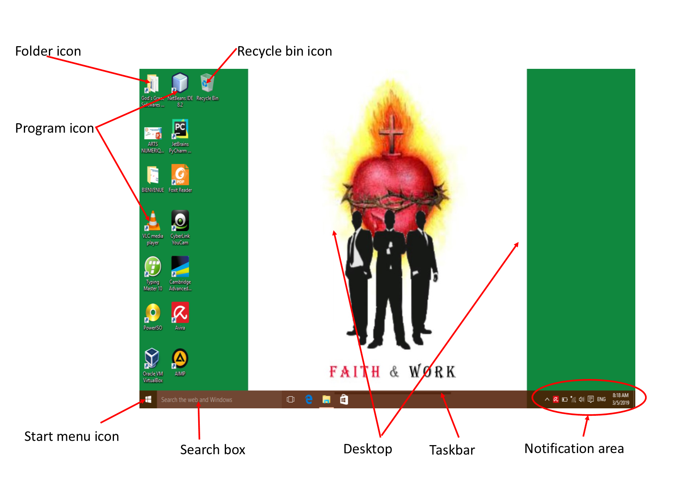
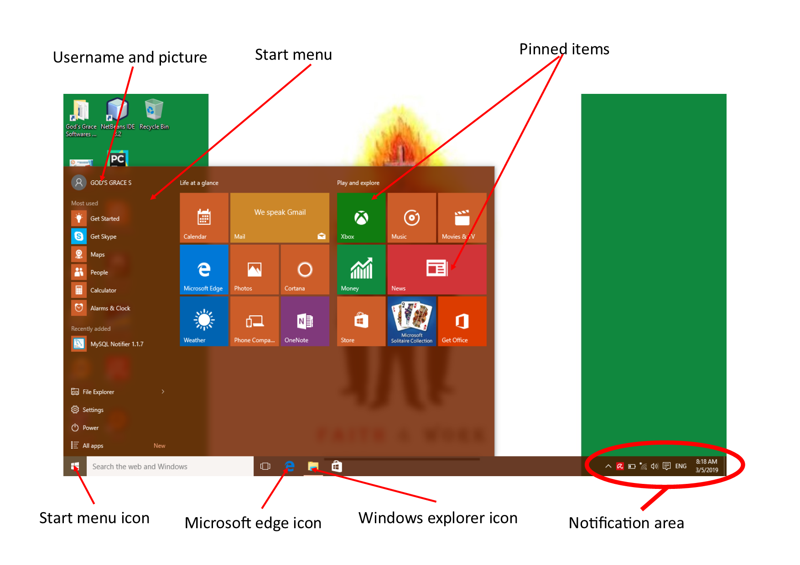
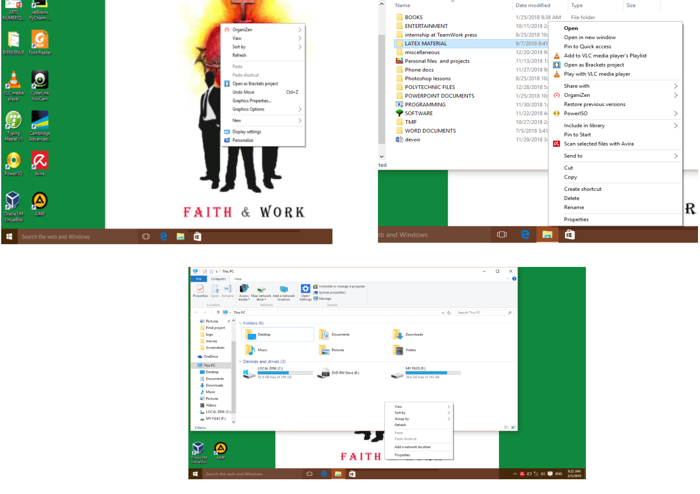

Getting Started with the Windows PC
So far, the most used operating system in the whole world is the Windows operating system in it's verious versions. This justifies the choice of this system to present how to get started with the use of a computer. We will present to you in very simple form all you need to know from starting the computer to using it. For our studies, we will work with Windows 10. However, where necessary, we will give out instructions on how to go about the particular activity with other versions of windows. It is however necessary to note that there is no major difference between the various versions of windows.
Booting process
 Booting is the computer science term for turning on a computer. The steps for doing so will slightly vary depending on whether you are on a desktop or a laptop.
For a laptop, the process is very easy. You simply need to press the power button of the computer and wait for it to come on. This button is usually found just near the keyboard either to the top left, top right or top center positions.
Booting is the computer science term for turning on a computer. The steps for doing so will slightly vary depending on whether you are on a desktop or a laptop.
For a laptop, the process is very easy. You simply need to press the power button of the computer and wait for it to come on. This button is usually found just near the keyboard either to the top left, top right or top center positions.
In case your computer is a desktop, you need to follow the following procedure:
- Plug in the monitor, system unit and other peripherals (speakers, microphone etc)
- Turn on monior and every other peripheral
- Turn on the system unit.
Getting started with the Windows Desktop
The windows desktop is very easy to get started with given that it is a graphical interface. Below are images of what you will meet when you boot into windows 10. The following image shows the windows start menu. 
Getting started with Windows Explorer

After the start menu, the next thing to know about windows is how to use the windows explorer window. This window can be launched either by double clicking on the windows explorer icon shown on one of the above images or by clicking on the icon that appears on the start menu. This window offers the main options for accessing and manipulating windows files and folders. It provides for copying, cutting, pasting, moving, renaming, deleting and many other operations on files and folders. It also gives us the opportunity to create new files and folders.
The explorer window offers three buttons at the top right hand corner for manipulating the window. The first button which looks like a dash minimizes the window to the taskbar, the second which has a square is used to maximize or minimize the window while the third which has a cross closses the window completely.
One other thing that we have in windows is what we call a context menu. This is a menu which contains a set of operations which can be performed on a selected item. This menu comes up when the right mouse button is pressed(right-clicking). As it name implies, the contents of the context menu depend on the context in which it is displayed. It varries from when a file is right-clicked to when a folder, desktop or empty space is right-clicked. The image below shows some context menus.

Shutting down windows
Shutdown is the word used to refer to the various processes that leat to the turning off of a computer. Unlike booting, we do not turn off a computer by pressing the power button. Below are the steps to be followed in order to safely shutdown your computer:- Close every open window
- Click on the start menu icon
- Select the power option
- Click on shutdown